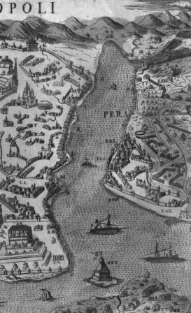

Bizanslılar Haliç’e Hirisokeras adını vermişlerdir. İki kelimeden mürekkep olan bu isim, Altın boynuz demekti. Sonradan Avrupalılar bu ismi “Korendor” olmak üzere, kendi lisanlarına tercüme etmişlerdir.
Bazı eski muharrirler, Bizanslıların bu limana verdikleri ismi, Yunan esatirinden İyon’un kızı Keraesa’ya atfetmektedir. Bazı muharrirler de Haliç’in bir geyik boynuzuna benzediğini ileri sürerek bu sebepten dolayı Haliç’e Altın boynuz tesmiye edildiğini (ismi verildiğini)) iddia etmişlerdir. Bunların hangisi doğru olursa olsun, ortada büyük bir hakikat vardır ki o da, Haliç’in, bütün dünyada eşi ve emsali olmayan bir iç liman olduğu merkezindendir.
Vaktiyle bu iç limanın sahilleri, son derecede latif manzaralara malikti. Her iki sahilde de çınarlardan, servilerden, yabani badem ağaçlarından, kıpkırmızı çiçekleriyle göze çarpan nar ağaçlarından, semalara doğru yükselen bu ağaç kümelerinin arasında yeşil renginin bütün elvanını gösteren çayırlardan mürekkep bedii (güzel) bir manzara arz ederdi. Bu ağaç kümelerinden arasında, Bizans imparatorlarının, Bizans asilzadelerinin beyaz mermerlerden, rengârenk somakilerden yapılmış olan büyüklü küçüklü köşk ve kâşaneleri yükselirdi. Burası sadece bir iç liman değil, aynı zamanda her cinsten ağaçları ve her mevsimde dilruba bahçe ve bağlarıyla adeta tabiatın en zarif en dalgarip bir letafet şehrine benzerdi. Bu itibarla Haliç, Bizanslıların bir zevk ve sefahat merkezini teşkil ederdi. Yazın sıcak günlerinde, gündüz işlerinden bunalmış olan Bizanslılar akşamları Perme denilen kayıklarına binerler, gurup eden güneşin son ışıklarıyla altın rengini alan Haliç’in sakin suları üzerinde gitarlarını çalarak, refahın ve huzurun verdiği bir sürur ve saadetle gezip eğlenirlerdi.
Haliç, aynı zamanda Bizans imparatorluğunun en büyük iktisadi merkezi idi. Şarki Roma İmparatorluğunun banisi olan imparator Birinci Konstantin, vücuda getirdiği Konstantinapol beldesinin etrafını muazzam surlarla çevirirken, Haliç sahillerin de muhtelif yerlerde kapılar açmayı ve bu kapıların önünde de birer iskele kurmayı ihmal etmemiştir.
Bir zamanlar burada, küçük bir liman ile hükûmet gemilerini yapmaya mahsus bir tersane de bulunuyordu. Liman, Kağıthane deresinden gelen çamurlarla dolmuştu. Fakat İmparator Kanta bir hayli paralar sarf ederek limanı dolduran çamurları temizletmeye muvafık oldu.
Bu liman, sık sık İstanbul denizlerini altüst eden lodos fırtınalarından ve bahusus düşman donanmalarının taarruzlarından tamamiyle masundu (korunmuştu). Onun için üç sıra kürekli harp kadırgaları burada demirliyor, aynı zamanda tamirleri de buradaki tezgâhlarda icra olunuyordu.
Akdeniz’den ve Karadeniz’den gelen ve imparatorluğun ihtiyaçlarına ait mal ve emtia getiren kayıklar, bu iskelelere yanaşırlar, orada pazarlar kurarlar, getirdikleri malları sattıktan sonra, Bizans sanatının nefis eserlerini de, Avrupa’nın ve hatta Dünya’nın her köşesine taşırlardı.
Haliç, gemiciler için de en emin bir ilticagah (sığınak) teşkil ederdi. Akdeniz’in ve bilhassa Karadeniz’in coşkun ve kudurmuş dalgaları üzerinde ölüm tehlikesi geçiren gemiciler, Haliç’e girer girmez kendilerini yeniden dünyaya gelmiş addederlerdi, ancak bu suretle halas ve necata kavuştuklarına hükmederlerdi.
Şarki Roma İmparatorluğu teessüs ederek (kurularak) kuvvetlenmeye başladıktan sonra, Haliç’te iki yer de, harp ve ticaret gemileri imal etmek üzere iki imalathane de vücuda getirilmişti. Bunlardan biri, şimdi Ayvansaray diğeri de Hasköy dediğimiz yerlerde idi. Bu tezgâhlarda, bilhassa harp gemilerinin imalatına çok ehemmiyet verilirdi. Bu itibarla Haliç, bir harp limanı ehemmiyetini de haizdi.
Bizanslılar, Haliç’in kıymetini takdir ederlerdi. Bizans hazinelerine sahip olmak için, muazzam beldeye sık sık ordular ve donanmalar gönderen muhtelif milletlerin tecavüzünden korumak için – sırası geldiği zaman mufassalan (ayrıntılı) arz edeceğimiz veçhile (şekilde) – Haliç’in methalini (girişini), kopması ve kırılması mümkün olmayan büyük bir zincir ile muhafaza ederlerdi.
Bizanslılar, bu semte çok ehemmiyet vermişlerdi. Burada, bir de hipodrom vücuda getirmişlerdi. Bu hipodromda da, Sultanahmet meydanında ki hipodromda olduğu gibi at ve araba yarışları yaparlar, esirleri aslanlara kaplanlara ve diğer vahşi hayvanlara parçalatırlar, hatta siyasi nümayişleri (gösterileri) bile burada icra ederlerdi. Bizanslılar, Haliç sahillerinin tabii servet ve ziynetini, aynı zamanda bir takım eserlerle tezyin etmişlerdi. O tarihte, bugün Eyüp Sultan dediğimiz yere Kozmidyon derlerdi. Burada, Ayamama adını verdikleri bir küçük saray ile bir manastır tesis etmişlerdi.
Kozmidyon, evvelce bir küçük köyden ibaretti. Fakat havasının letafeti ve bilhassa civarındaki ormanlarda av hayvanlarının mebzuliyeti (bolca bulunması) ile iştihar (meşhur) etmişti. Bizans imparatorlarından Leon tarafından burada bir Av sarayı inşa ettirilmiş ve bu saraya Ayamama adı verilmişti.
Bugün Bostan iskelesi dediğimiz yerde inşa edilmiş olan bu saray, pek büyük değildi. Lâkin son derecede zarif ve muhteşemdi. Odalarının, salonlarının ve dehlizlerinin inşasında kullanılan mermerler ve somakiler[1], kâmilen Marmara adalarının en nefis mermer ocaklarından getirildiği gibi, tezyinat için kullanılan altın damarlı somakilerde Bandırma civarındaki bir ocaktan celbedilmişti. Odaların ve dehlizlerin tavanlarıyla duvarlarına, altın mozaiklerle mukaddes tasvirler işlenmişti. Tıpkı bir minyatürü andıran bu saraydan, som altın yaldızla kaplanmış bir dehliz vasıtasıyla, saraya bitişik olan küçük hipodroma, oradaki imparatorun hususi locasına geçirilir, imparator ile saray erkânı, hipodromdaki oyunları ve yarışları oradan seyrederlerdi.
Yine saraya pek yakın olan manastırda da, artık dünya işleriyle alakalarını kesmiş olan saray kadınları ikamet ederlerdi. Bu terki dünya kadınlar, gece gündüz İnciller ve ilahiler okuyarak vakitlerini taat ve ibadet ile geçirirlerdi.
Manastırın küçük kilisesinin başpapazı, büyük bir imtiyaza malikti. Harbe gidecek imparatorlarla Bizans asilzade ve kumandanları, hareketlerinden evvel bu kiliseye gelirler, hususi bir merasim ile istikbal edilirdi. Kilisenin Başpapazı tarafından, yine hususi bir ayin yapılırdı. Ondan sonra, harbe gidecek olan imparatorlarla asilzadelere ve kumandanlara başpapaz tarafından silâhları kuşatılırdı.
Ayamama Sarayı’nda cereyan etmiş olan bazı maceraların, acı ve tatlı hâtıraları da vardı. İmparatoriçe İren’in oğlu Kostantin, zevcesi Mari’yi mukaddes sarayda bırakarak, meşhur bir sokak fahişesi olan Dilber Etodora ile bu sarayda yaşamıştı.
Sonra, zulüm ve istipdattan (baskıdan) dolayı aleyhine isyan edilen Üçüncü Mihail’in kafaları âsiler tarafından bu sarayda kopartılmış, bir futbol topu gibi ayaklarla vurula vurula sahile kadar indirilen o talihsiz baş, sahilden Haliç’in durgun sularına atılmıştı.
Bulgarlar, Kostontinopol şehrini zapt etmek hülyasıyla Bizans surlarına hücum etmişlerdi. Fakat bu hücum, Teshiri (zapt etmesi) kabil (mümkün) olmayan o muazzam kale bedenlerinin altında, akametle (başarısızlıkla) neticelendi. Bu muvafakatsizlik karşısında kalan Bulgarlar, Surların haricinde bulunan Ayamama Sarayı ile manastırını tahrip ettiler, bütün eşyalarıyla beraber, sarayın altın damarlı somaki direklerini kapı ve pencerelerini sökerek memleketlerine gönderdiler.
Bizanslılar, Haliç sahillerine küçük küçük saraylar ve zarif köşkler inşa etmişlerdi. Bunları da, Bizans imparatorluğunu zapt etmek için Konstantin surlarına kadar gelmiş olan Barbar orduları tahrip etmişler, onlarda tıpkı Bulgarlar gibi o saray ve köşklerin kıymetli kısımlarıyla mevcut eşyalarını memleketlerine götürmüşlerdi.
Konstantaniye kalesinin yabancılar tarafından taarruza ve muhasaraya uğradığı zamanlarda bu saraylar ve kiliseler kâmilen yıkılmış, yakılmış, varlıklarından hiçbir eser bırakılmamıştır.
Bizanslılar, Haliç sahilinde, — bugün Ayvansaray dediğimiz yerde— Velâkerna Sarayı’nı yapmışlardı. Bu saray, İmparatorların ikametine mahsus olan yazlık saraydı. Surların dâhilindeki Mukaddes saray ile diğer saraylarda sıcaktan bunalan imparatorlar, yazın bir müddet Velâkerna Sarayı’nda otururlar ve arada sırada surların haricine çıkarak avlanırlardı.
Bu sarayda çok muhteşemdi. Fakat bu da Bizans surlarına cebren aşan Lâtinler tarafından tahrip edildi. Ve kıymet ifade eden bütün eşyalarıyla duvar ve tavan tezyinatı, Fransa ve İngiltere’ye gönderildi.
Asırlar geçtikçe, Bizans imparatorluğu sukut ediyordu. Muhtelif tecavüzlere uğrayan Bizans şehri ve kalası harap olup gidiyordu. Artık bu bin senelik İmparatorluğun şevket ve azameti azalmıştı. Bütün mukavemet kudret ve kuvveti yalnız, Büyük şehri çevreleyen ve – o devre göre – nakabil (mümkün olmayan) zapt ve tesir addedilen muazzam surlarına münhasır kalmıştı.
